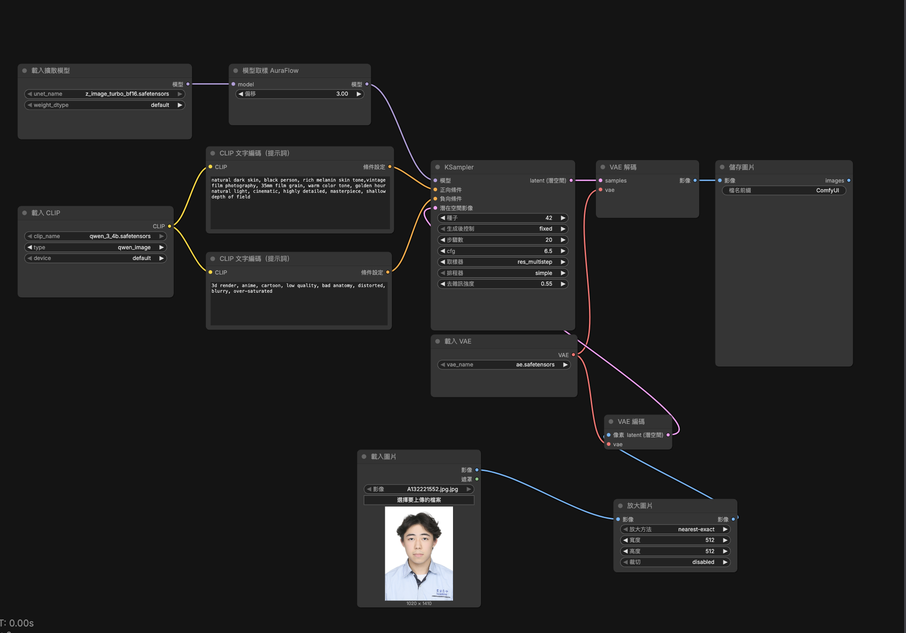

natural dark skin, black person, rich melanin skin tone,vintage film photography, 35mm film grain, warm color tone, golden hour natural light, cinematic, highly detailed, masterpiece, shallow depth of field
3d render, anime, cartoon, low quality, bad anatomy, distorted, blurry, over-saturated
